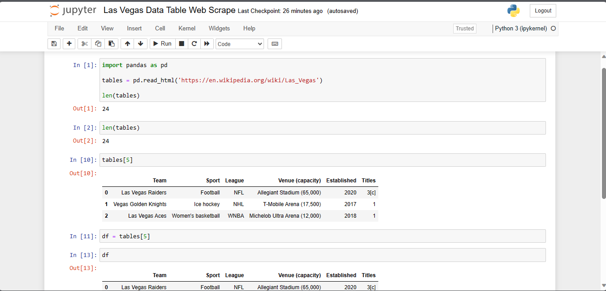

This project aims to demonstrate web scraping using Python with the BeautifulSoup and pandas libraries. It fetches data from a Wikipedia page about Las Vegas and extracts a specific table, which includes information about various aspects of the city such as sports teams, venues, and establishment dates. The extracted data is then processed into a pandas DataFrame and saved as an Excel file for further analysis or visualization.


Combined sample data across multiple files using Power Query while leveraging Power Pivot's dynamic modeling. Creating cohesive data structures enabling insightful analysis and visualizations for informed decision-making.

Utilized Excel Power Query to automate data cleaning for weekly reports.


Utilized Excel Macros to create a reports generator to be shared with a team to boost productivity.

Excel dashboard created using bike shop data. Cleaned and visualized in Excel

Utilized Google BigQuery to explore global COVID 19 data.

Covid 19 dashboard linked with BigQuery visualized with Looker Studio

Future project pending, suggestions welcome! Feel free to contact me with a project request.